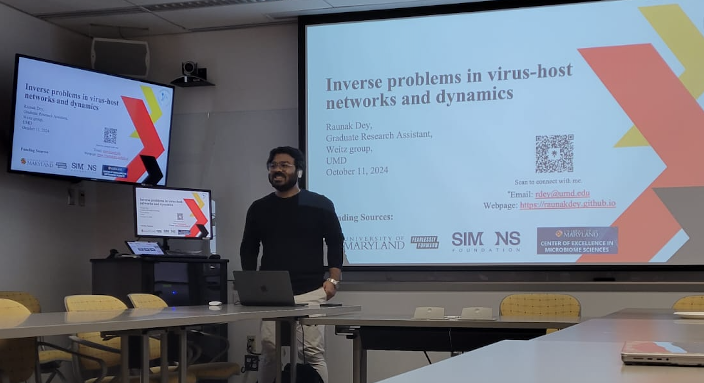
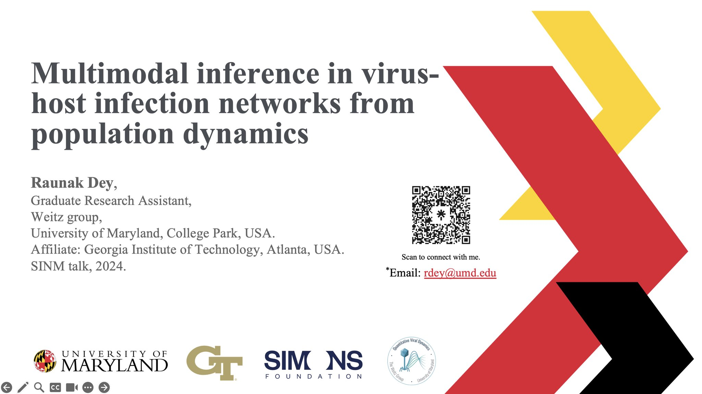
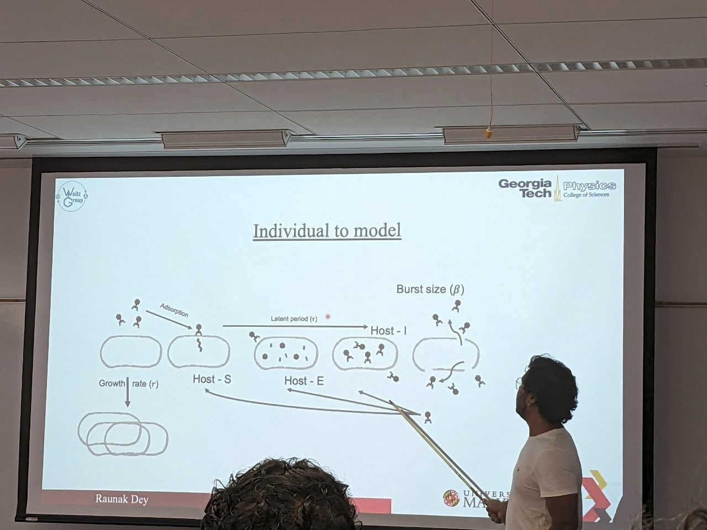
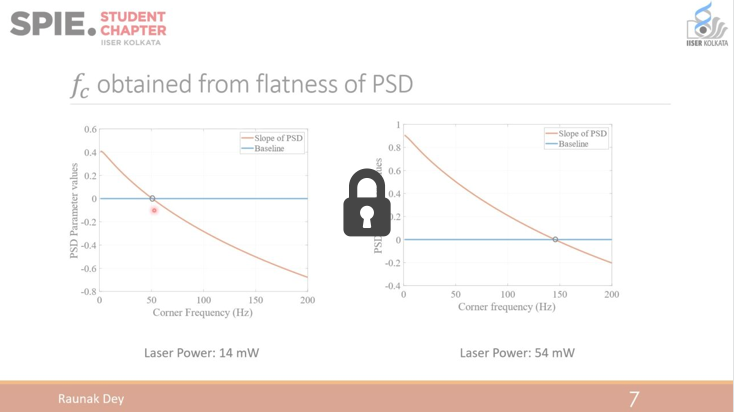

{% assign publication_posts = site.posts | contains: 'categories', 'publications' %}
<div id="talks" class="container py-5">
    <h2 class="section-title" >Talks</h2>


    <div class="talk-item">
        <div class="talk-img">
            
        </div>
        <div class="talk-content">
            <h3>Inverse problems in virus-host networks and dynamics</h3>
            <p class="talk-meta"> Physics of Living Systems seminar | Oct 11, 2024</p>
            Presented my recent works on inverse modeling virus microbe intercations. First talked about
            Bayesian inference of one virus and one host system. Extended Bayesian model to higher order interactions mediated
            multiple hosts and multiple viral interactions. Showed how these new interactions emerge at scale. Next, presented on
            how to use a multitask inference framework for inferring traits from multiple viruses and microbes. </p>
        </div>
    </div>

    
    <div class="talk-item">
        <div class="talk-img">
            
        </div>
        <div class="talk-content">
            <h3>Multimodal Inference of virus-microbe networks from population dynamics</h3>
            <p class="talk-meta"> UMD, Microbiome Center (opening talk for newly founded center) | October 15, 2024</p>
            <p class="talk-meta"> Statistical Inference of Network Models, NetSci-24, Canada | June 16, 2024</p>
            <p class="talk-meta"> UMD Physics of Living Systems seminar | April 19, 2024</p>
            <p class="talk-description"> Delivered a talk on using multimodal machine learning, that integrates data, ML model, Physics etc., to infer network edges.
            Showed how this multimodal approach is better than the conventional unimodal appoach in both parameter inference and time-series forecasting.</p>
        </div>
    </div>

    <div class="talk-item">
        <div class="talk-img">
            
        </div>
        <div class="talk-content">
            <h3> Bayesian inference of emergent traits and higher order interactions is virus-microbe communities. </h3>
            <p class="talk-meta">UMD Physics of Living Systems seminar | November 3, 2024</p>
            <p class="talk-meta">UMD MathBio seminar | December 5, 2023</p>
            <p class="talk-meta">SCOPE annual meeting, Simons Foundation (NYC) | November, 2023</p>
            <p class="talk-meta">International Conference on Physics of Living Systems (I-PoLS) | August, 2023</p>
            <p class="talk-meta">Georgia Tech Physics of Living Systems | October, 2022</p>
            
            <p class="talk-description"> Delivered a talk on how life-history traits of a single strain of virus infecting a single strain of microbe is changed when put together in a complex
            community with multiple interacting strains. I start by building an inverse model for pairwise interactions. Talked how the forward version of that models cannot fit the community data.
            Next I build a scaled-up model for the community interactions and use Bayesian inference to infer life-history traits of these strains. But that cannot also describe the community completely. Only by 
            integrating data and model iteratively and taking into consideration the higher order emergent effects the community transient dynamics of these strains could be recapitulated.</p>
        </div>
    </div>

    <div class="talk-item">
        <div class="talk-img">
            
        </div>
        <div class="talk-content">
            <h3>Random Number extraction from stochastic trajectories using iterative ML algorithm</h3>
            <p class="talk-meta">SPIE Photonics, San Diego, California | August 1, 2021</p>
            <p class="talk-meta">University of Konstanz | January 2020</p>
            <p class="talk-description"> Talked about our new ML based model that integrates NIST tests for randomness with a stochastic trajectory to (a) calibrate the stochastic process through parameter estimation and (b) extract "true" random numbers from a 
            stochastic trajectory that optimizes entropy of randomness. </p>   
        </div>
    </div>

    <!-- Add more talk items as needed -->
</div>
